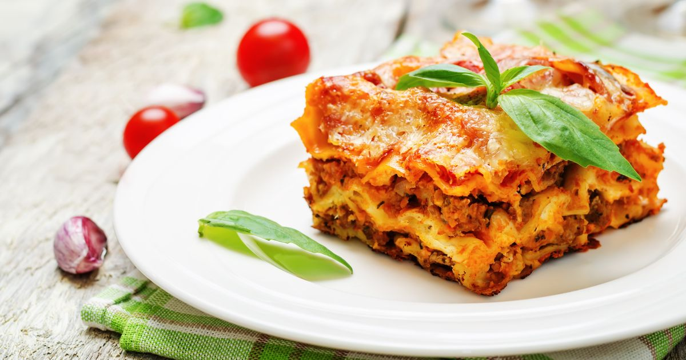

Pravé talianske lasagne

Description
From what I can tell, the secret behind Alton's lasagna is the addition of a little sugar to the sauce and using a bit more cheese than most other recipes.
There are a few minor tweaks to his original recipe that I found necessary, for example adding a dash of wine vinegar to the sauce and changing the amount of Parmesan cheese.
For this recipe, we are essentially making a thick, meaty tomato sauce and layering that with noodles and cheese into a casserole. Here's the run-down:
Ingredients:
-
1/2 pound dry lasagna noodles (requires 9 lasagna noodles - unbroken)
-
15 ounces ricotta cheese
-
1 1/2 pounds (24 ounces) mozzarella cheese, grated or sliced
-
1/4 pound (4 ounces) freshly grated Parmesan cheese
Steps
-
Start by making the sauce with ground beef, bell peppers, onions, and a combo of tomato sauce, tomato paste, crushed tomatoes.
The three kinds of tomatoes gives the saucegreat depth of flavor.
-
Let this simmer while you boil the noodles and get the cheeses ready. We're using ricotta, shredded mozzarella,
and parmesan -- like the mix of tomatoes, this 3-cheese blend gives the lasagna great flavor!
-
From there, it's just an assembly job. A cup of meat sauce, a layer of noodles, more sauce, followed by a layer of cheese.
Repeat until you have three layers and have used up all the ingredients.
-
Bake until bubbly and you're ready to eat!
Back